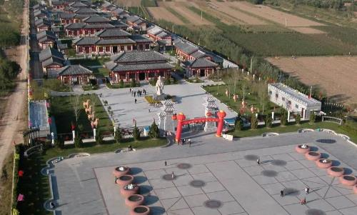

Try out Binzhou BBQ
Binzhou BBQ is a kind of street food typically for summer, which is getting so famous in China.

Visit Qufu Confucian Temple in Qufu
Qufu Confucian Temple is the main temple dedicated to Confucius , a famous thinker and educator in the Spring and Autumn Period of China.
Going for a hike in Laoshan mountain
It is a famous tourist mountain in China and is known as "the first fairy mountain on the sea". It is the third highest peak in Shandong Province.